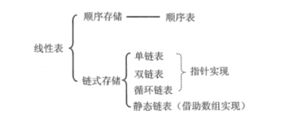
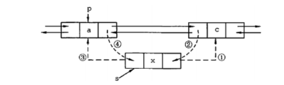
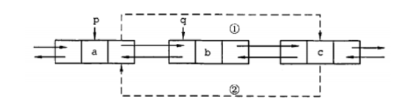
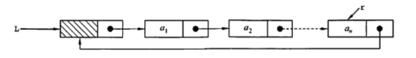
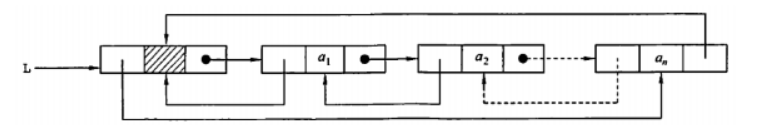
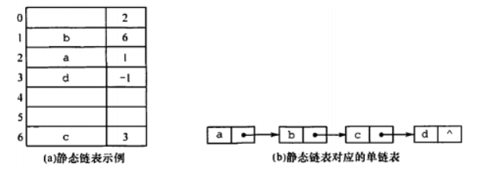
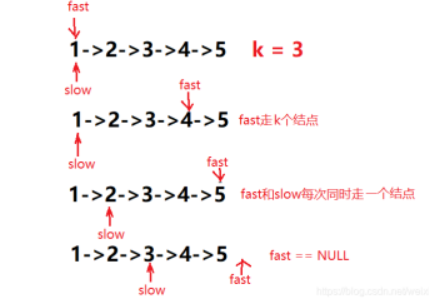

数据结构面经2：线性表

1 各种线性表
1.1 优缺点
顺序表
- 优点：可以随机存取，快；存储密度大
- 缺点：插入、删除效率低；存储空间固定，分多了浪费，分少了又不足
单链表
- 优点：插入、删除效率高；空间可动态分配
- 缺点：不能随机存取，要顺序存取，慢；存储密度不大（有指针域）
静态链表：融合顺序表和单链表的优点，既能快速访问元素，又能快速插入、删除元素
1.2 对比
1.2.1 存取（读写）方式
顺序表可以顺序存取，也可以随机存取，链表只能从表头顺序存取元素。例如在第i个位置上执行存或取的操作，顺序表仅需一次访问，而链表则需从表头开始依次访问i次。
1.2.2 逻辑结构与物理结构
采用顺序存储时，逻辑上相邻的元素，对应的物理存储位置也相邻。而采用链式存储时，逻辑上相邻的元素，物理存储位置则不一定相邻，对应的逻辑关系是通过指针链接来表示的。
1.2.3 查找、插入和删除操作
对于按值查找，顺序表无序时，两者的时间复杂度均为；顺序表有序时，可采用折半查找，此
时的时间复杂度为 。
对于按序号查找，顺序表支持随机访问，时间复杂度仅为, 而链表的平均时间复杂度为 。
顺序表的插入、删除操作，平均需要移动半个表长的元素。
链表的插入、删除操作，只需修改相关结点的指针域即可。由于链表的每个结点都带有指针域，故而存储密度不够大。
1.2.4 空间分配
顺序存储在静态存储分配情形下，一旦存储空间装满就不能扩充，若再加入新元素，则会出现内存溢出，因此需要预先分配足够大的存储空间。预先分配过大，可能会导致顺序表后部大量闲置；预先分配过小，又会造成溢出。动态存储分配虽然存储空间可以扩充，但需要移动大量元素，导致操作效率降低，而且若内存中没有更大块的连续存储空间，则会导致分配失败。
链式存储的结点空间只在需要时申请分配，只要内存有空间就可以分配，操作灵活、高效。
2 单链表
2.1 插入

2.2 删除

3 循环链表
3.1 单向循环链表

3.2 双向循环链表

4 静态链表
静态链表需分配连续的内存空间，借助数组来描述链表，每个结点包含数据+游标（下一个元素的数组索引）。

5 头指针和头结点的区别？
- 头指针：指向第一个节点存储位置的指针，具有标识作用，头指针是链表的必要元素，无论链表是否为空，头指针都存在。
- 头结点：放在第一个元素节点之前，便于在第一个元素节点之前进行插入和删除的操作，头结点不是链表的必须元素，可有可无，头结点的数据域也可以不存储任何信息。
6 查找单链表中倒数第 k 个结点
- 建立两个指针：fast、slow
- 先让fast走k步
- 再让fast和slow一起走，直到fast走到末尾后一位，slow指向的就是倒数第k个结点

7 单链表就地逆序（空间复杂度为O(1)）
- 建立两个指针：p、q
- p用于遍历链表中的每个结点
- q用于头插法创建新的逆序链表
1 | void reverse(ListNode* head) |
8 判断链表有没有环
法1：使用map来保存对应的内存地址，如果重复访问，则一定有环
法2：快慢指针法，从头开始设置两个指针，快指针每次走2 步，慢指针每次走1 步，如果快指针先碰到尾，则无环，否则两个指针之后一定会重合，则有环。
本博客所有文章除特别声明外，均采用 CC BY-NC-SA 4.0 许可协议。转载请注明来自 诺亚方舟！
 微信
微信 支付宝
支付宝
相关推荐


评论